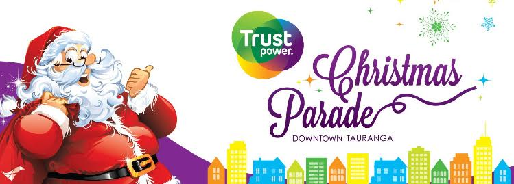
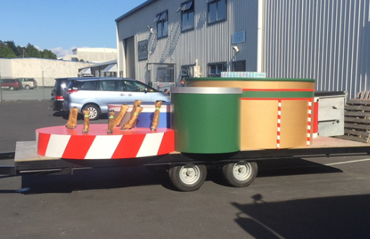
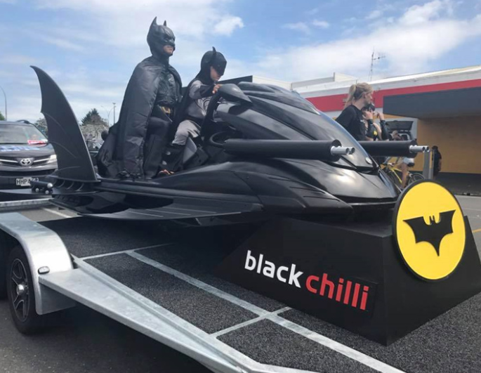
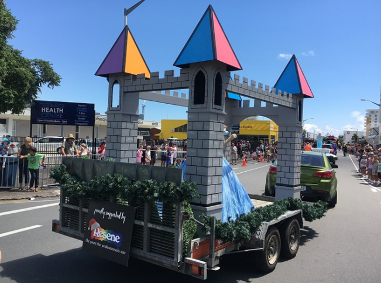
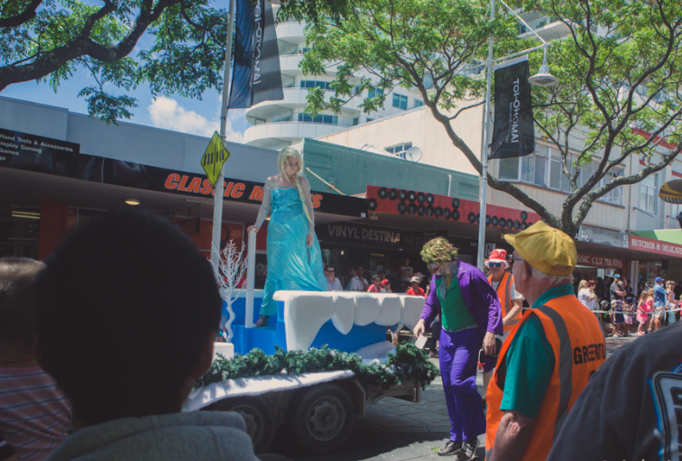

Christmas Parade
The Trustpower Christmas parade starts the Christmas season, features colourful community floats, lively bands, marching teams, arcobatic groups and colourful characters. Black Chilli Designs works with Downtown Tauranga and Downtown Tauranga to create amzing floats for the community to enjoy. We have been able to bring to life designs that have special characters stand on each year, adding new floats each year, allowing for the parade to get larger for everyone to enjoy.
Santa's Float
The Santa float was built for the 2017 Christmas parade and had to be festive for the big man himself. We were able to design a way for Santa to have a new float that wasn't just his normal slay, but still stood out for the kids.
This float is something that is bright and colourful but still holding the festive spirit. It also makes a great display as it becames part of the Christmas display in the city center each year.
BatSki
The BatSki was a fun project that was put into the Christmas parade for the hero Batman.
We took a written off jetski shell and built a machine for Batman creating wings, machine guns, missiles, etc from a variety of materials. It was used for promotion by B.O.P Film who were able to find Batman, Joker, etc.
The BatSki has also been used as a prop in photos so they don't forget the amazing day. Since 2016 the BatSki has been in the parade and each year it's a winner. But it has also been used as a display. So it's not just for Batman.
During the design and building process, the Batski had to be strong enough to have people climbing on and off the jetski itself without the props and add ons falling off.
Princess Float
The Princess Float was build for the 2017 Christmas parade and was made to give the idea of a castle. The float was created to have more than one character on at one time and also show the characters to the crowds.
Not only has it been used for the parade and photoshoots, it has also been used as a display for kids in the city center to celebrate Christmas.
The float is taken apart by removing the triangle tops and the joining arch tops, and each of the towers are seperate. This is for easy installation and removing, but it makes it easier for the float to be stored for the rest of the year when its not being used.
Elsa's Frozen Float
Elsa's Frozen Float was part of the first floats that we built for the parade in 2015. This plaform was to have Queen Elsa from Frozen to stand on it but also had to bring her frozen talent in the middle of summer.
This float has been in the parade each year but also been used as a display and used for kids to get photos with their favourite character.
It had to be easy to take apart but also easy for characters and kids to get on to so they could get the best quality photo. With the props added to the blue platform it brings winter to the Tauranga CBD during the hot summer.